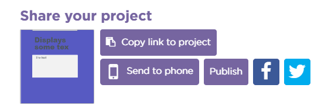
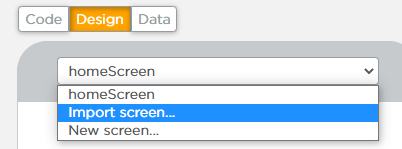
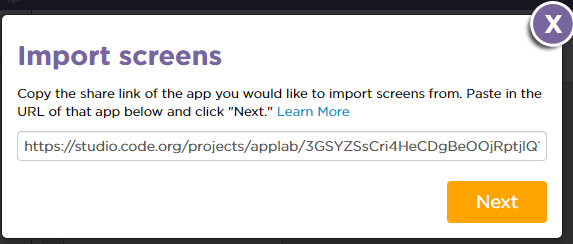
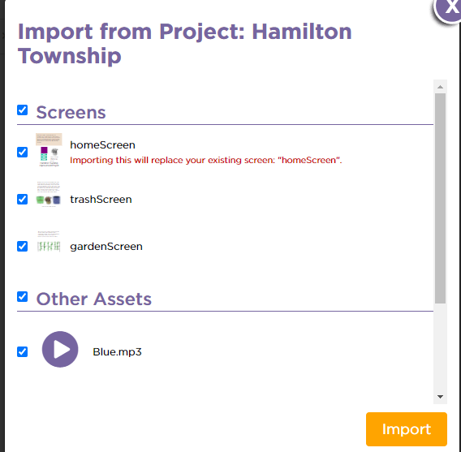

Why is it important to plan out the design of an app?
The design you sketched out for your app is a prototype of your app. A prototype helps you plan the look and features of your app before you program it.
There are entire programming environments dedicated to just laying out the screens of an app.
Other people will be using your app, and they need to understand how to use it. A good prototype can really help with that.
Head over to Unit 3, Lesson 3 on code.org. You’ll see a prototype of one of the apps you explored before.
After looking at this app and its prototype, you may want to make a few adjustments to your own. Take a few minutes to update your design, then move on to Level 2, where you’ll start building your user interface in App Lab!
Here’s how to combine your screens with your partner:
Partner A clicks Share, then copies the share link to send to Partner B.
Partner B clicks the screen dropdown, then clicks “Import screen…”.
Partner B pastes in the share link from Partner A.
Partner B selects all of the screens and assets, then imports them.
Partner B sets the home screen to be the default screen. (Hint: go to Design Mode and click on the screen.)
Repeat so both partners have copies of all the screens.




Post the “Share” link for your project here so your partner can access it. Include your name so your partner knows which post is yours.
Were there any changes you had to make to your original design once you transferred it to a screen? What were the changes?